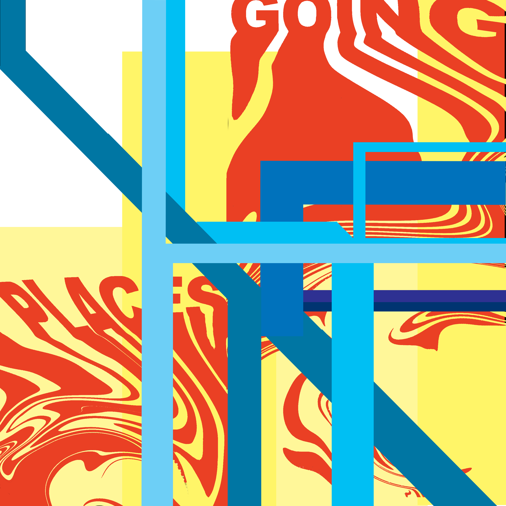

Going Places
Going places represents literally and metaphorically my journeys in the city. The lines are the same lines of the subway station I would travel through to get where I needed to go. But the subway in my mind represents so much more than just getting from literal point a to point b. The subway, the city, everything takes you places you would never know. The possibilities are endless. This wonder and this ambiguity fascinates me and thus why I felt like I needed to create a piece devoted to this. Within the print are other hidden thoughts and feelings that if they resonate with you I assume you will pick up on, however if you don’t then I hope you can enjoy this piece for the bright color and subway shoutout.
